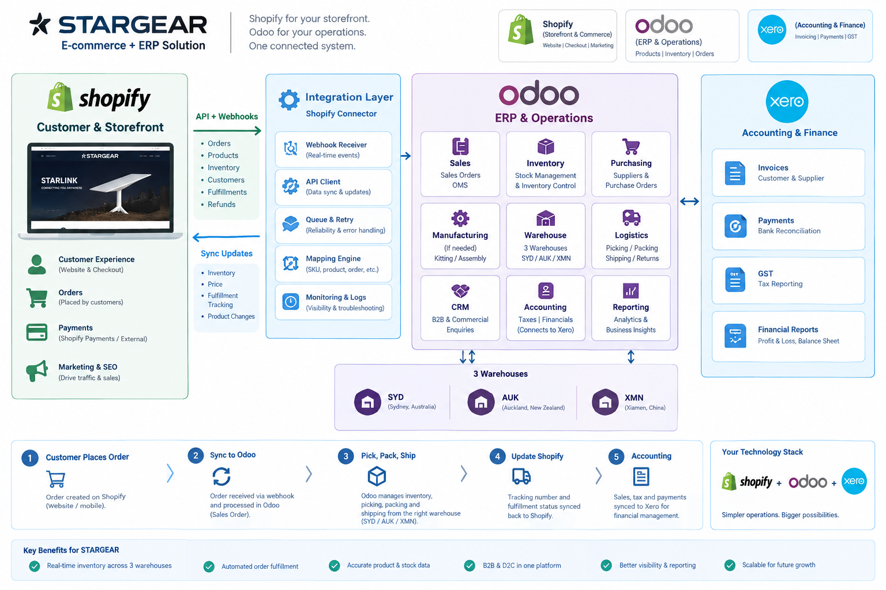

OMS/Odoo 完整需求分析
BRD / Functional Requirements / SRS 初稿

| 项目 |
内容 |
| 适用品牌 |
STARGEAR + PREMIER + SUNARMOR |
| 电商渠道 |
Shopify × 2 |
| 仓库 |
XMN / SYD / AUK 三仓 |
| 财务系统 |
Xero × 2 |
| 用途 |
Odoo Fit-Gap、实施报价、自建 OMS/WMS 方案比较 |
| 整理日期 |
2026-09-14 |
目录
- 项目目标
- 业务范围
- System of Record
- Product / SKU Management
- Inventory Management
- 三仓库与库存调拨
- OMS / Sales Order
- Warehouse Allocation
- Purchasing
- Supplier Management
- Shipment / Container / Landed Cost
- Receiving / Put Away / WMS
- Stocktake
- Returns / Refunds
- Shopify Integration
- Xero Integration
- Multi-company / Brand
- Tax / GST
- Multi-currency
- Users / Roles / Permissions
- Audit / Security / Reliability
- Reporting / BI
- Dashboard
- Odoo 19 方案
- 自建 OMS/WMS 方案
- Odoo vs 自建 OMS/WMS
- 实施路线
- UAT / 验收标准
- Fit-Gap 标记
- 最终建议
- 附录 A — 推荐业务架构
- 附录 B — 核心订单流
- 附录 C — 核心供应链流
- 附录 D — Odoo 官方 Shopify Connector（v19.0）
- 附录 E — Shopify 配送与退货管理（官方文档）
- 附录 F — Odoo 销售退货与退款（官方文档）
- 附录 G — Odoo 导航入门
- 附录 H — Odoo 库存基础：收货与存储
- 附录 I — 第三方连接器对比：TechMarbles Shopify Connector
- 参考链接汇总
1. 项目目标
- 建立统一业务运营平台，连接 Shopify、订单、库存、仓库、采购、供应链和 Xero。
- 建议系统边界：
- Shopify = Commerce
- Odoo/OMS = Operations & Inventory
- Xero = Financial Accounting
- 核心数据流：Shopify → OMS/Odoo → Xero。
- 避免多个系统同时作为同一类数据的主数据源。
2. 业务范围
- STARGEAR：Starlink accessories。
- PREMIER：commercial consumables。
- SUNARMOR：solar/battery supplies & spare parts。
- XMN：厦门采购/出口/集货。
- SYD：悉尼澳洲主配送。
- AUK：奥克兰新西兰配送。
- 渠道：STARGEAR Shopify Store、PREMIER Shopify Store。
- 财务：STARGEAR Xero、PREMIER Xero。
3. System of Record
| 系统 |
职责 |
主数据范围 |
| Shopify |
Commerce |
Website、Product presentation、Customer、Cart、Checkout、Payment、Online Order、Promotion |
| Odoo/OMS |
Operations & Inventory |
Inventory、Warehouse、Purchase、Supplier、Allocation、Picking、Packing、Transfer、Returns、Landed Cost |
| Xero |
Financial Accounting |
General Ledger、AP、AR、GST、Bank、Payment、Financial Reporting |
4. Product / SKU Management
- Product 字段：SKU、Name、Brand、Category、Description、Barcode、HS Code、Country of Origin、Weight、Dimensions、Supplier、Cost、Price、Currency、Tax Code、Active/Inactive。
- Variant 必须拥有独立 SKU、Barcode、Weight、Cost、Price、Inventory。
- SKU 是 Shopify、OMS/Odoo、Xero 之间主要业务 Key；不能依赖商品名称。
5. Inventory Management
- 每个 SKU × Warehouse 维护：
- OnHand
- Reserved
- Available
- InTransit
- Damaged
- Quarantine
- Returned
- 建议公式：
Available = OnHand - Reserved - Damaged - Quarantine
- 所有库存调整必须记录：User、Timestamp、OldValue、NewValue、Reason。
6. 三仓库与库存调拨
- 支持路线：
- XMN → SYD
- XMN → AUK
- SYD ↔ AUK
- Transfer 字段：Number、From、To、SKU、Qty、Requested Date、Ship Date、ETA、Actual Arrival、Status。
- 状态：
Draft → Approved → Picking → Shipped → In Transit → Received → Completed
- 支持 Cancelled。
- 货物离开源仓减少 OnHand，目标仓增加 InTransit；实际收货后转为 OnHand。
7. OMS / Sales Order
Shopify Order → Validate → Allocation → Warehouse Selection → Pick → Pack → Ship → Tracking → Shopify Fulfillment
- 状态：New、Confirmed、Allocated、Picking、Packed、PartiallyShipped、Shipped、Delivered、Cancelled、Returned、Refunded、Closed。
- 必须支持订单拆分、部分发货、Backorder、取消、退货和退款。
- 一个订单可以产生多个 Shipment，但必须保留与原 Shopify Order 的关联。
8. Warehouse Allocation
- 根据客户地区、库存可用量、仓库优先级和物流规则决定发货仓。
- 建议 SYD/AUK 优先；XMN Direct Ship 作为可配置规则。
9. Purchasing
Purchase Request → RFQ → Approval → Purchase Order → Supplier Confirmation → Shipment → Receiving → Invoice
- PO 字段：Supplier、Supplier SKU、Internal SKU、Qty、Unit Price、Currency、Expected Delivery、Warehouse、Incoterm、Payment Term、MOQ、Lead Time、Notes。
- 审批阈值应可配置；示例：
- < A$1k
- A$1–5k
- A$5–20k
-
A$20k
10. Supplier Management
- Supplier 字段：Contact、Country、Currency、Payment Terms、Lead Time、MOQ、Incoterm、Supplier SKU、Unit Cost、Historical Cost。
- 支持 Supplier × SKU，保存不同供应商价格、MOQ、Lead Time 和历史采购成本。
11. Shipment / Container / Landed Cost
- Shipment 字段：Number、Supplier、Warehouse、Container Number、Booking Number、ETD、ETA、Actual Arrival、Forwarder、Incoterm、Freight、Duty、Customs、Status。
- Landed Cost 公式：
Landed Cost = Product Cost + Freight + Insurance + Duty + Customs + Port Fee + Broker + Other Charges
- 利润分析应优先使用 Landed Cost，而不仅仅是 Supplier Cost。
12. Receiving / Put Away / WMS
PO → Expected Receipt → Scan SKU → Quantity Check → Quality Check → Put Away → Inventory Update
- 支持部分收货，例如 Expected 100、Received 98、Damaged 2。
- 支持 Receiving、Put Away、Picking、Packing、Dispatch、Stocktake、Adjustment、Transfer、Return。
- 可扩展 Bin Location，例如：
SYD/A01/A01-01/A01-01-03
13. Stocktake
Stocktake → Snapshot/Freeze → Count → Variance → Approval → Adjustment
- 记录：System Qty、Physical Qty、Variance、Reason、Counter、Timestamp、Approver。
14. Returns / Refunds
Shopify Return → Return Authorisation → Warehouse Receive → Inspection → Good / Damaged / Quarantine
- 支持 Full Refund、Partial Refund、Shipping Refund、Product Refund。
- 必须关联 Order、Invoice、Credit Note、Xero。
15. Shopify Integration
- Shopify → Odoo/OMS：
- Products
- Customers
- Orders
- Payments
- Returns
- Refunds
- Odoo/OMS → Shopify：
- Inventory
- Fulfillment
- Tracking
- 必要的 Product updates
- 两个 Store 分别配置：
- Store ID
- Credentials
- Product / Inventory Mapping
- Order Mapping
- Tax Mapping
- Warehouse Mapping
- 必须验证：
- 同步延迟
- 重复订单
- 库存冲突
- 失败重试
- webhook / cron 机制
16. Xero Integration
- 建议 Shopify 不直接连接 Xero，而采用：
Shopify → Odoo/OMS → Xero
- OMS/Odoo → Xero：
- Customer Invoice
- Credit Note
- Supplier Bill
- Payment
- 可按需要回传：
- Payment Status
- Contacts
- Accounts
- Tax
- 必须验证实际 Xero Connector 的版本、同步对象、多公司、失败处理和费用。
17. Multi-company / Brand
- 只有独立 Legal Entity 才建立 Company。
- Brand / Business Unit 不应无理由拆成 Company。
- 如果 SUNARMOR 是独立法律实体，建立独立 Company。
- 如果 SUNARMOR 只是品牌，则使用 Brand / Business Unit / Analytic Dimension。
18. Tax / GST
- 澳洲：
- GST taxable
- GST-free
- Export
- Input Tax Credit
- BAS
- Tax Mapping
- NZ：
- NZ GST
- NZ sales
- NZ purchases
- Import
- Export
- FX
- 税务配置应以实际注册情况及 Odoo/Xero 本地化能力为准。
19. Multi-currency
- 建议至少支持：AUD、NZD、USD、CNY。
- 每笔交易保存：
- Transaction Currency
- Exchange Rate
- Base Currency
- Transaction Date
- 历史交易不能随今日汇率变化而重算。
20. Users / Roles / Permissions
| 用户 |
角色 |
| Vincent |
Owner / SuperAdmin / Finance |
| Bessie |
Sales / Shopify |
| Cassie |
Sales |
| Asher |
Warehouse Manager |
| Johnny |
Sales + Warehouse |
| Craig |
Admin / IT / Integration / Reporting |
- 权限应按模块、Company、Warehouse、Store、操作类型细分。
- 尤其限制：
- Inventory Adjustment
- Refund
- PO Approval
- Accounting
21. Audit / Security / Reliability
- 重要操作记录：User、Timestamp、Action、Old Value、New Value、Reason。
- 安全：
- MFA
- RBAC
- OAuth
- Encryption
- Secrets Management
- Audit Log
- API Access Control
- Integration：
- Authentication
- Authorization
- Idempotency
- Retry
- Dead Letter Queue
- Logging
- Monitoring
- 建议：
- Availability 99.9%
- 数据库 Daily Backup + Point-in-Time Recovery
- 初始目标 RPO ≤ 1 hour、RTO ≤ 4 hours
22. Reporting / BI
- Sales：按 Brand、SKU、Customer、Shopify Store、Warehouse、Country。
- Inventory：On Hand、Available、Reserved、In Transit、Slow Moving、Dead Stock、Inventory Valuation。
- Purchasing：Open PO、Supplier Performance、Purchase Cost、Lead Time、MOQ。
- Warehouse：Pending Orders、Pick/Pack Performance、Stock Variance。
- Profitability：
Sales - Product/Landed Cost - Freight - Fees = Gross Margin
23. Dashboard
- Management Dashboard：
- Sales
- Orders
- Inventory Value
- Gross Margin
- SYD/AUK/XMN Inventory
- Open PO
- In Transit
- Backorders
- Returns
- Warehouse Dashboard：
- Pending Pick
- Pending Pack
- Dispatch
- Stock Variance
- Purchasing Dashboard：
- Open PO
- ETA
- Supplier Lead Time
- Cost Trend
24. Odoo 19 方案
- Odoo 19 作为运营核心，Shopify 作为 Commerce，Xero 作为 Finance。
- 标准 Odoo 承担：
- Sales
- Inventory
- Purchase
- Warehouse
- Supplier
- 特殊业务用 Custom Modules。
- 重点 Fit-Gap：
- Shopify 两店
- 库存同步实时性
- 三仓库 / Transit
- Allocation
- Returns / Refunds
- Xero Connector
- AU/NZ GST
- Landed Cost
- Container / Shipment
- Barcode
- 审批
25. 自建 OMS/WMS 方案
Shopify → API Gateway → OMS API → PostgreSQL
- 异步：SQS
- Cache：Redis
- 文件/备份：S3
- 部署：ECS/Fargate 或 Lambda
- 财务：Xero API
- 建议技术栈：
- React / Next.js
- Python FastAPI
- PostgreSQL
- AWS SQS
- Redis
- S3
- ECS/Fargate
- CloudWatch
- Secrets Manager
- 自建方案适合高度定制、实时事件驱动和长期产品化，但需要承担税务、财务、审计、运维和升级成本。
26. Odoo vs 自建 OMS/WMS
| 维度 |
Odoo |
自建 OMS |
| Shopify |
9/10 |
10/10 |
| Inventory |
10/10 |
10/10 |
| Purchasing |
10/10 |
10/10 |
| WMS |
9/10 |
10/10 |
| Xero |
7/10 |
9/10 |
| AU/NZ GST |
10/10 |
5/10 |
| Accounting |
10/10 |
3/10 |
| Custom Logic |
8/10 |
10/10 |
| Time-to-Market |
9/10 |
5/10 |
27. 实施路线
| 阶段 |
内容 |
| Phase 1 Foundation |
Company、Brand、Product、SKU、Supplier、Customer、Warehouse、Location、Tax、Currency；Shopify 两店；三仓库存、Reserved、Available、Transfer |
| Phase 2 Warehouse + Purchasing |
Receiving、Put Away、Picking、Packing、Dispatch、Barcode、Stocktake、Purchase Request、RFQ、PO、Approval、Supplier |
| Phase 3 International Supply Chain |
Shipment、Container、ETA、Freight、Customs、Duty、Landed Cost、In Transit |
| Phase 4 Finance |
Invoice、Credit Note、Supplier Bill、Payment、GST、Reconciliation |
| Phase 5 Analytics |
Data Warehouse、Databricks/SQL、Power BI、Forecast、Replenishment、Dead Stock |
28. UAT / 验收标准
- Order：
- Shopify Order 自动进入
- 不重复
- 可取消
- 拆单
- 部分发货
- Backorder
- Inventory：
- 三仓
- Reserved
- Available
- Transfer
- In Transit 数量正确
- Warehouse：
- Receiving
- Picking
- Packing
- Dispatch
- Stocktake 全流程完成
- Purchase：
- PO
- Approval
- Receiving
- Partial Receiving
- Supplier Invoice
- Shopify：
- Order
- Inventory
- Fulfillment
- Tracking
- Return
- Refund
- Xero：
- Invoice
- Credit Note
- Bill
- Payment
- GST 正确同步
29. Fit-Gap 标记
- O = Odoo Standard
- C = Configuration
- M = Custom Module
- I = Integration
- N = Not Supported
建议拿本需求逐项询问 Odoo 实施商，并要求每一项给出 Standard / Configuration / Custom 的明确结论和报价。
优先验证：
- Shopify 两店
- 库存实时性
- 三仓 Transit
- Allocation
- Returns / Refunds
- Xero
- 多公司
- AU/NZ GST
- Landed Cost
- Container / Shipment
- Barcode
- 审批
30. 最终建议
- 当前最合理方案：以 Odoo 19 为基线做 Fit-Gap，采用 Odoo + Custom Modules，而不是一开始 100% 自建 ERP。
- 标准业务交给 Odoo；真正特殊、形成竞争力的流程再开发。
- 只有当核心业务流程约 20–30% 以上需要深度定制，且实时事件驱动成为关键要求时，再认真考虑独立 OMS/WMS。
附录
附录 A — 推荐业务架构
Shopify STARGEAR + Shopify PREMIER
↓
Odoo / OMS
↓
XMN / SYD / AUK
↓
Xero STARGEAR + Xero PREMIER
- Shopify 负责 Commerce。
- Odoo/OMS 负责 Operations。
- Xero 负责 Finance。
附录 B — 核心订单流
Customer
→ Shopify
→ Order
→ OMS/Odoo
→ Inventory Allocation
→ SYD/AUK
→ Pick
→ Pack
→ Ship
→ Tracking
→ Shopify Fulfillment
→ Xero Accounting
附录 C — 核心供应链流
Supplier
→ Purchase Order
→ XMN
→ Container
→ In Transit
→ SYD/AUK
→ Available
→ Shopify
附录 D — Odoo 官方 Shopify Connector（v19.0）
来源：
https://www.odoo.com/documentation/19.0/applications/sales/sales/shopify_connector.html
支持同步的数据：
| 数据 |
方向 |
| Orders |
Shopify → Odoo |
| Products |
Shopify → Odoo |
| Inventory |
双向 |
| Fulfillments / Deliveries |
双向 |
| Returns |
Shopify → Odoo |
| Refunds / Credit Notes |
Shopify → Odoo |
| Invoices & Payments |
Odoo 自动创建 |
| Customers |
Shopify → Odoo |
关键限制与同步机制：
- 官方连接器不执行实时同步，不依赖 Webhook，全部通过 Scheduled Actions（cron）定期运行。
- 默认同步频率：订单每 10 分钟；库存（Odoo → Shopify）每次拉取订单后推送；在 Odoo 处理的发货每 10 分钟。
- 从 Shopify 拉取库存通常仅在首次设置连接器或修正数据不一致时需要，使用账户配置中的 “Fetch Inventory” 按钮手动触发。
配送处理模式对退货同步的影响：
- Deliveries handled in Odoo： Shopify 发起的退货不会自动同步，需在 Odoo 中手动处理。
- Deliveries handled in Shopify： Shopify 发起的退货会自动同步到 Odoo。
对本次 Fit-Gap 的启示：
如果业务要求“库存实时性”或“退货自动回流”，官方连接器的 cron 机制（10 分钟间隔）可能不满足，需评估 TechMarbles 等第三方连接器的实时同步能力，或规划自定义 Webhook 开发。
附录 E — Shopify 配送与退货管理（官方文档）
来源：
https://www.odoo.com/documentation/19.0/applications/sales/sales/shopify_connector/fulfillment.html
| 配置项 |
Deliveries handled in Odoo |
Deliveries handled in Shopify |
| 适用场景 |
仓库团队已在 Odoo 中运营 |
订单完全在 Shopify 或第三方物流中履约 |
| 发货单创建 |
订单同步时自动创建 Ready 状态的仓库发货单 |
自动为 Unfulfilled 订单创建 Ready 状态的仓库发货单 |
| 发货验证 |
用户在 Odoo 中点击 Validate，每 10 分钟推送至 Shopify |
发货在 Shopify 完成后，承运人、追踪号和数量拉回 Odoo |
| 退货处理 |
Shopify 发起的退货不自动同步，需手动处理 |
Shopify 发起的退货自动同步到 Odoo |
| 拆分发货 |
支持，可多次发货 |
完全支持，可同步多地点、多承运人发货 |
拆分发货支持：
官方连接器完全支持拆分发货，可为同一订单创建多个 Fulfillment，包括不同地点发货、同一地点多次发货、不同承运人发货。
对本次 Fit-Gap 的启示：
- 三仓库（XMN/SYD/AUK）场景下，需明确 “Delivery Handled On” 的统一策略。
- 若 SYD/AUK 在 Odoo 中处理发货、XMN Direct Ship 在 Shopify 侧处理，则退货同步路径会因模式不同而产生分裂，需在设计中明确规则。
- 拆分发货是本次需求的硬性要求（第 7 节），官方连接器已声明支持，Fit-Gap 中可标记为 O（Odoo Standard）。
附录 F — Odoo 销售退货与退款（官方文档）
来源：
https://www.odoo.com/documentation/19.0/applications/sales/sales/products_prices/returns.html
开票前退货（Before Invoicing）
- 使用 Reverse Transfers 完成退货。前提是 Inventory 应用已安装。
- 流程：销售订单 → Delivery smart button → 已验证的发货单 → 点击 Return → 调整数量 → 确认。
- 系统生成新的入库仓库操作，仓库团队验证后，原销售订单的 Delivered 数量自动更新为“初始发货量 − 退货量”。
- 后续开票时，客户仅收到其保留商品的发票。
开票后退货（After Invoicing）
- 已验证或已发送的发票不能直接修改，需 Reverse Transfers + Credit Notes 配合完成。
- 流程：销售订单 → Delivery → Return（同开票前）→ 仓库验证入库后，Delivered 数量更新。
- 退款：从销售订单打开关联发票 → 点击 Credit Note → 填写 Reason、Journal、Reversal Date → 点击 Reverse 或 Reverse and Create Invoice → 确认。
- 完成后页面顶部显示蓝色横幅，提示客户存在未分配贷项，可将其分配给原发票以标记为已付款。
对本次 Fit-Gap 的启示：
- 第 14 节要求“关联 Order、Invoice、Credit Note、Xero”。
- Odoo 原生的 Reverse Transfer + Credit Note 机制可覆盖“仓库退货 → 财务贷项”链路，但 Credit Note 同步至 Xero 取决于 Xero Connector 的能力，需单独验证。
- “Good / Damaged / Quarantine” 的分类检验不在标准退货流程中直接体现，可能需要 Custom Module 或配置额外的质检步骤。
附录 G — Odoo 导航入门
来源：
https://www.youtube.com/watch?v=NoxYrnnHgfk
用途：
- 作为团队（Vincent、Bessie、Cassie、Asher、Johnny、Craig）的入职培训基础资源。
- 覆盖应用菜单访问、模块搜索与安装、基本界面导航。
- 建议纳入 Phase 1 Foundation 的用户启用计划中，在配置 Company/Brand/Product/SKU 之前完成全员基础操作培训。
附录 H — Odoo 库存基础：收货与存储
来源：
https://www.youtube.com/watch?v=0r575dWbkMk&list=PL1-aSABtP6ACBCPEZqo3sGGK48sP3xS4U
覆盖内容：
- 产品与库位的设置，用于在 Odoo Inventory 中收货和存储物品。
- 属于 Inventory 基础系列，该系列还涵盖补货、追溯、仓库调拨、产品预留、包装、日常操作等。
对本次实施的关联：
- 直接支撑第 12 节 Receiving / Put Away / WMS 的基础配置培训。
- 建议 Asher（Warehouse Manager）与 Johnny（Sales + Warehouse）在 Phase 2 开始前完成该系列学习，作为 Put Away、Bin Location、Barcode 配置的操作前提。
附录 I — 第三方连接器对比：TechMarbles Shopify Connector
参考来源：
- YouTube 视频：Odoo Shopify Integration by TechMarbles
https://www.youtube.com/watch?v=2-yP6MhhmLc
- Shopify App Store：
https://apps.shopify.com/odoo-integrator
- Odoo Apps Store：
https://apps.odoo.com/apps/modules/18.0/techmarbles_shopify_connector
| 维度 |
Odoo 官方 Connector |
TechMarbles Connector |
| 同步机制 |
Cron（每 10 分钟） |
声称“实时同步” |
| 库存多地点 |
需验证 |
明确支持多地点库存同步 |
| 历史数据导入 |
不明确 |
支持批量历史订单/产品/客户导入 |
| 废弃购物车 |
不支持 |
可推送至 Odoo CRM 作为销售线索 |
| 定价 |
官方内置 |
基础计划 $30/月 或 $300/年；Odoo Apps Store 显示 from $35/month |
| Odoo 版本 |
19.0 原生 |
16/17/18/19+，支持 Odoo Online、Odoo.sh、自托管 |
| 数据经过第三方云 |
否 |
是，数据经 TechMarbles 云同步服务处理 |
社区反馈（来自 Shopify App Store 评论摘录）：
- 有用户反馈 TechMarbles 团队对其部分发货同步需求响应迅速，并主动开发了所需功能。
- 有用户使用其完成 PayPal、Klarna 等支付方式映射等复杂配置。
对本次 Fit-Gap 的建议：
如果第 15 节要求的“同步延迟”验证结果指向 10 分钟 cron 不可接受，TechMarbles 可作为备选方案之一纳入比较，但必须验证：
- 三仓库（XMN/SYD/AUK）场景下多地点库存同步的准确性；
- 退货/退款是否自动回流，以及是否与官方连接器在 “Deliveries handled in Shopify” 模式下的行为一致；
- 数据经过第三方云同步服务的安全与合规是否满足第 21 节的 Audit/Security 要求（OAuth、加密、Secrets Management、API Access Control）。
建议在 Fit-Gap 阶段将 官方 Connector 与 TechMarbles Connector 并行验证，以 UAT 场景中的“库存冲突”“重复订单”“失败重试”为测试用例，用实际同步延迟和错误率做决策依据。
参考链接汇总
- Odoo Shopify Connector：
https://www.odoo.com/documentation/19.0/applications/sales/sales/shopify_connector.html
- Shopify delivery and return management：
https://www.odoo.com/documentation/19.0/applications/sales/sales/shopify_connector/fulfillment.html
- Odoo Returns：
https://www.odoo.com/documentation/19.0/applications/sales/sales/products_prices/returns.html
- TechMarbles Shopify Integration：
https://www.youtube.com/watch?v=2-yP6MhhmLc
- Navigate in Odoo：
https://www.youtube.com/watch?v=NoxYrnnHgfk
- Inventory Basics: Receive and Store Stock：
https://www.youtube.com/watch?v=0r575dWbkMk&list=PL1-aSABtP6ACBCPEZqo3sGGK48sP3xS4U
注：本文档根据公开资料与需求分析初稿整理，实施前请以 Odoo 官方文档、Xero/Shopify 官方说明及供应商最终确认为准。